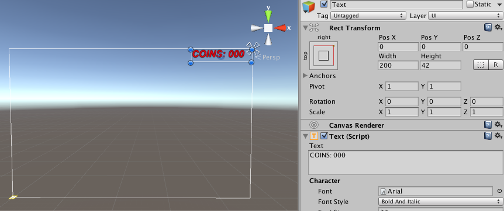

El motor Unity¶
Unity es un motor genérico para la creación de videojuegos 2D y 3D enfocado hacia el desarrollo casual. La curva de aprendizaje del motor es bastante suave, especialmente si lo comparamos con motores más complejos como Unreal Engine 4, y nos permitirá realizar un desarrollo rápido de videojuegos. Esta característica hace este motor muy apropiado también para crear prototipos rápidos de nuestros juegos.
A partir de la versión Unity 5, existen dos ediciones: Personal y Profesional. La primera es gratuita e incluye todas las funcionalidades del motor. La segunda incluye funcionalidades adicionales de soporte (construcción en la nube, herramientas de trabajo en equipo, etc), y es de pago (suscripción de $75 o pago único de $1.500). La versión Personal podrá ser utilizada por cualquier individuo o empresa cuyas ganancias anuales no superen los $100.000.
Uno de los puntos fuertes de Unity es la posibilidad de exportar a gran cantidad de plataformas. Soporta las plataformas móviles iOS, Android, Windows Phone y Blackberry, y además también permite exportar a web (WebGL), a videoconsolas (PS4, PS3, PS Vita, Xbox One, Xbox 360, Wii U, etc) y a ordenadores (Mac, Windows y Linux).
Introducción a Unity¶
El editor de Unity¶
Unity incorpora su propia herramienta integrada para la creación de videojuegos, que nos permite incluso crear algunos videojuegos de forma visual sin la necesidad de programar.
Dentro del entorno del editor de Unity encontramos diferentes paneles, de los cuales destacamos los siguientes:
- Project: Encontramos aquí todos los recursos (assets) que componen nuestro proyecto. Estos recursos pueden ser por ejemplo texturas, clips de audio, scripts, o escenas. Destacamos aquí el asset de tipo escena, que es el componente que nos permite definir cada estado (pantalla) del juego. Al hacer doble click sobre una escena se abrirá para trabajar con ella desde el editor.
- Hierarchy: La escena está formada por una serie de nodos (game objects) organizados de forma jerárquica. En este panel vemos el árbol de objetos que contiene la escena abierta actualmente. Podemos seleccionar en ella cualquier objeto pulsando sobre su nombre.
- Scene: En este panel vemos de forma visual los elementos de la escena actual. Podremos movernos libremente por el espacio 3D de la escena para ubicar de forma correcta cada game object y tener una previsualización del escenario del juego.
- Inspector: Muestra las propiedades del game object o el asset seleccionado actualmente en el entorno.

Arquitectura Orientada a Componentes¶
Como hemos comentado, todos los elementos de la escena son objetos de tipo GameObject organizados de forma jerárquica. Todos los objetos son del mismo tipo, independientemente de la función que desempeñen en el juego. Lo que diferencia a unos de otros son los componentes que incorporen. Cada objeto podrá contener varios componentes, y estos componentes determinarán las funciones del objeto.
Por ejemplo, un objeto que incorpore un componente Camera será capaz de renderizar en pantalla lo que se vea en la escena desde su punto de vista. Si además incorpora un componente Light, emitirá luz que se proyectará sobre otros elementos de la escena, y si tiene un componente Renderer, tendrá un contenido gráfico que se renderizará dentro de la escena.
Esto es lo que se conoce como Arquitectura Basada en Componentes, que nos proporciona la ventaja de que las funcionalidades de los componentes se podrán reutilizar en diferentes tipos de entidades del juego. Es especialmente útil cuando tener un gran número de diferentes entidades en el juego, pero que comparten módulos de funcionalidad.
En Unity esta arquitectura se implementa mediante agregación. Si bien en todos los objetos de la escena son objetos que heredan de GameObject, éstos podrán contener un conjunto de componentes de distintos tipos (Light, Camera, Renderer, etc) que determinarán el comportamiento del objeto.
En el inspector podremos ver la lista de componentes que incorpora el objeto seleccionado actualmente, y modificar sus propiedades:
La escena 3D¶
El el editor de Unity veremos la escena con la que estemos trabajando actualmente, tanto de forma visual (Scene) como de forma jerárquica (Hierarchy). Nos podremos mover por ella y podremos añadir diferentes tipos de objetos.
Posicionamiento de los objetos en la escena¶
Todos los game objects incorporan al menos un componente Transform que nos permite situarlo en la escena, indicando su traslación, orientación y escala. Podremos introducir esta información en el editor, para así poder ajustar la posición del objeto de forma precisa.
También podemos mover un objeto de forma visual desde la vista Scene. Al seleccionar un objeto, bien en Scene o en Hierarchy, veremos sobre él en Scene una serie de ejes que nos indicarán que podemos moverlo. El tipo de ejes que se mostrarán dependerá del tipo de transformación que tengamos activa en la barra superior:
Las posibles transformaciones son:
- Traslación: Los ejes aparecerán como flechas y nos permitirán cambiar la posición del objeto.
- Rotación: Veremos tres círculos alrededor del objeto que nos pemtirán rotarlo alrededor de sus ejes x, y, z.
- Escalado: Veremos los ejes acabando en cajas, indicando que podemos escalar el objeto en x, y, z.
Si pinchamos sobre uno de los ejes y arrastramos, trasladaremos, rotaremos, o escalaremos el objeto sólo en dicha eje. Si pinchamos sobre el objeto, pero no sobre ninguno de los ejes, podremos trasladarlo, rotarlo y escalarlo en todos los ejes al mismo tiempo.
Añadir game objects a la escena¶
Podemos añadir a la escena nuevos game objects seleccionando en el menú la opción GameObject > Create Empty, lo cual creará un nuevo objeto vacío con un único componente Transform, al que le deberíamos añadir los componentes que necesitásemos, o bien podemos crear objetos ya predefinidos mediante GameObject > Create Other.
Entre los tipos de objetos predefinidos que nos permite crear, encontramos diferentes formas geométricas como Cube, Sphere, Capsule o Plane entre otras. Estas figuras pueden resultarnos de utilidad como objetos impostores en primeras versiones del juego en las que todavía no contamos con nuestros propios modelos gráficos. Por ejemplo, podríamos utilizar un cubo que de momento haga el papel de nuestro personaje hasta que contemos con su modelo 3D.

Podremos organizar de forma jerárquica los objetos de la escena mediante la vista Hierarchy. Si arrastramos un game object sobre otro en esta vista, haremos que pase a ser su hijo en el árbol de la escena. Los objetos vacíos con un único componente Transform pueden sernos de gran utilidad para agrupar dentro de él varios objetos. De esta forma, moviendo el objeto padre podremos mover de forma conjunta todos los objetos que contiene. De esta forma estaremos creando objetos compuestos.
También resulta de utilidad dar nombre a los objetos de la escena, para poder identificarlos fácilmente. Si hacemos click sobre el nombre de un objeto en la vista Hierarchy podremos editarlo y darle un nombre significativo (por ejemplo Suelo, Pared, Enemigo, etc).

Navegación en la escena¶
Además de podemos añadir objetos a la escena y moverlos a diferentes posiciones, deberemos poder movernos por la escena para posicionarnos en los puntos de vista que nos interesen para crear el contenido. Será importante conocer una serie de atajos de teclado para poder movernos con fluidez a través de la escena.
Encontramos tres tipos de movimientos básicos para movernos por la escena en el editor:
- Traslación lateral: Hacemos click sobre la escena y arrastramos el ratón.
- Giro: Pulsamos Alt + click y arrastramos el ratón para girar nuestro punto de vista.
- Avance: Pultamos Ctrl + click y arrastramos el ratón, o bien movemos la rueda del ratón para avanzar hacia delante o hace atrás en la dirección en la que estamos mirando.
Con los comandos anteriores podremos desplazarnos libremente sobre la escena, pero también es importante conocer otras forma más directas de movernos a la posición que nos interese:
- Ver un objeto: Si nos interesa ir rápidamente a un punto donde veamos de cerca un objeto concreto de la escena, podemos hacer doble click sobre dicho objeto en la vista Hierarchy.
- Alineación con un objeto: Alinea la vista de la escena con el objeto seleccionado. Es especialmente útil cuando se utiliza con la cámara, ya que veremos la escena tal como se estaría bien desde la camara. Para hacer esto, seleccionaremos el game object con el que nos queramos alinear y seleccionaremos la opción del menú GameObject > Align View To Selected.
Interfaz de usuario¶
El sistema con el que cuenta Unity para crear la interfaz de usuario se introdujo a partir de la versión 4.6. Se trata de un sistema bastante versátil, que utilizado de forma adecuada nos permite crear interfaces como por ejemplo los menús o el HUD del juego que se adapten a diferentes tamaños y formas de pantalla.
Todo el contenido de la interfaz de usuario estará contenido en nuestra escena dentro de un elemento tipo Canvas (es decir, un game object que cuente con un componente Canvas). Dentro de él ubicaremos todos los componentes de la interfaz, como por ejemplo imágenes, etiquetas de texto o botones.
Canvas¶
El Canvas será el panel 2D (lienzo) donde podremos crear el contenido de la interfaz de usuario. Los componentes de la interfaz siempre deberán estar dentro de un Canvas en la jerarquía de la de escena. Si intentamos arrastrar sobre la escena un componente de la UI sin un Canvas, el Canvas se creará de forma automática.

Una propiedad importante del componente Canvas es Render Mode, que podrá tomar 3 valores:
- Screen Space - Overlay: El
Canvasse dibuja sobre el contenido que aparece en pantalla, ajustándose siempre al tamaño de la misma. - Screen Space - Camera: Similar a la anterior, pero en este caso debemos vincularlo a una cámara, indicando la distancia a la que estará el
Canvasde la cámara seleccionada, y elCanvasse ajustará al tamaño que tenga el tronco de la cámara a dicha distancia. Se aplicarán sobre elCanvaslos parámetros de la cámara seleccionada. - World Space: En este caso el
Canvasse comportará como cualquier otro objeto 3D en la escena. Le daremos un tamaño fijo al panel y lo situaremos en una posición del mundo. Así podremos tener interfaces con las que podamos interactuar en nuestro mundo 3D.
En la previsualización de la escena, cuando tengamos un
Canvasde tipo Screen Space es posible que lo veamos de un tamaño mucho mayor que el resto de elementos de la escena. Esto se debe a que las unidades con las que trabaja internamente elCanvasson pixels en pantalla, mientras que es habitual que los elementos de la escena tengan dimensiones de alrededor de una unidad. Al ejecutar el juego no habrá ningún problema ya que elCanvasse ajustará al tamaño de la pantalla o de la cámara.
Elementos de la UI¶


Posicionamiento en el espacio de la UI¶



Escalado del Canvas¶
Normalmente en nuestro Canvas encontraremos un componente adicional que es el CanvasScaler. Se trata de un elemento importante a la hora de conseguir interfaces adaptables, ya que nos permite personalizar la forma en la que se escala el contenido del Canvas a distintos tamaños de pantalla.
Podemos optar por tres modos:
- Constant Pixel Size
- Scale With Screen Size
- Constant Physical Size
Realidad Virtual¶
Existen diferentes dispositivos de realidad virtual, que nos proporcionan una inmersión casi total en la escena, reflejando en la cámara los movimientos de nuestra cabeza, y proporcionando una visión estereoscópica de la escena. Entre los dispositivos más famosos se encuentran Oculus Rift, Samsung Gear VR y Google Cardboard. Aunque todos estos dispositivos proporcionan su propio SDK que podemos integrar en las plataformas nativas de desarrollo, es de especial interés su integración en el entorno Unity, que nos permitirá realizar aplicaciones que los soporten de forma casi inmediata. A continuación veremos cómo utilizarlos con este entorno.
Oculus Rift / Samsung Gear VR¶
A partir de Unity 5.1 encontramos en este entorno soporte nativo para los dispositivos Oculus Rift y Samsung Gear VR. Ambos utilizan el mismo SDK y herramientas, con la diferencia de que Oculus Rift funciona sobre plataformas de sobremesa, mientras que Samsung Gear VR funciona sobre móviles Samsung.
Para activar el soporte para estos dispositivos en Unity simplemente tendremos que entrar en Player Settings (Edit > Project Settings > Player) y bien dentro de la plataforma Standalone (para Oculus Rift) o Android (para Samsung Gear VR) marcar la casilla Virtual Reality Supported, dentro de la sección Other Settings > Rendering.
Una vez hecho esto, automáticamente la cámara de la escena se comportará como una cámara VR, girando cuando giremos la cabeza y renderizando una imagen para cada ojo, para así proporcionar visión estéreo.
Despliegue de la aplicación en un dispositivo de prueba
Antes de desplegar la aplicación en un dispositivo de prueba, deberemos añadir una firma que nos deberá proporcionar Oculus para nuestro dispositivo concreto. Dicha firma sólo se necesitará durante el desarrollo, cuando la aplicación se publique ya no hará falta.
Para conseguir la firma en primer lugar necesitamos obtener el ID de nuestro dispositivo. Para ello lo conectaremos al sistema y ejecutaremos el comando:
1 | adb devices |
En la lista de dispositivos en la primera columna veremos los IDs que buscamos, con el siguiente formato:
1 2 | * daemon started successfully * 1235ba5e7a311272 device |
En este caso, el ID que buscamos sería 1235ba5e7a311272. Una vez localizado dicho ID, iremos a la siguiente página para solicitar la firma e introduciremos el ID (necesitaremos registrarnos previamente como usuarios de Oculus Developer, si no tenemos cuenta todavía):
https://developer.oculus.com/osig/
Una vez introducido el ID nos descargará un fichero .osig que deberá ser introducido en nuestro proyecto de Unity en el siguiente directorio:
1 | Assets/Plugins/Android/assets |
Esto lo que hará será colocar dicho fichero en el directorio assets del proyecto Unity resultante. Una vez hecho esto ya podremos probar la aplicación en un dispositivo Samsung con Gear VR seleccionando la plataforma Android y pulsando sobre Build & Run.
Al desplegar la aplicación en el móvil Samsung, veremos que al ejecutarla nos pide conectar el dispositivo Gear VR al móvil. Una vez conectado, se ejecutará la aplicación y podremos ver nuestra escena de Unity de forma inmersiva.

Sin embargo, veremos que la imagen aparece algo distorsionada al verla a través de las lentes del Gear VR. Esto se debe a que aunque la cámara renderiza en estéreo y responde al movimiento de la cabeza, no se realiza la corrección adecuada a la imagen para verla a través de las lentes del Gear VR.
Utilidades de Oculus
Aunque la cámara de Unity puede ser utilizada para aplicaciones de VR, hemos visto que tiene algunas carencias como por ejemplo el no realizar una corrección de la distorsión que realiza la lente.

Para poder resolver estas carencias y tener la posibilidad de configurar e implementar diferentes componentes de la aplicación VR, Oculus proporciona una serie de utilidades en forma de paquete de assets para Unity que podemos descargar desde su web:
https://developer.oculus.com/downloads/
Desde esta página podremos bajar tanto versiones actualizadas del plugin de Oculus/Gear para Unity (OVR Plugin for Unity 5) como las utilidades adicionales (Oculus Utilities for Unity 5).
Para instalar el plugin simplemente tendremos que buscar dentro del directorio de instalación de Unity el directorio VR (en caso de MacOS tendremos que mirar dentro del contenido del paquete Unity para localizar dicho directorio), y dentro de él sustituir el directorio oculus y todo su contenido por el proporcionado por el plugin.
Una vez actualizado el plugin podremos añadir las utilities cargándolo en el proyecto como paquete de assets.
Uno de los assets más útiles es el prefab OVRCameraRig. Podemos utilizarlo en la escena en lugar de la cámara de Unity, y nos permitirá configurar diferentes propiedades de la cámara en la escena 3D, como por ejemplo la distancia entre los ojos. Además, aplicará de forma correcta la corrección a la distorsión introducida por las lentes.
Modo de desarrollador
En los casos anteriores hemos probado la aplicación con el dispositivo Gear VR. Sin embargo, durante el desarrollo nos podría interesar poder probar la aplicación en el móvil sin la necesidad de tener que conectarlo al Gear VR.
Podemos conseguir esto activando el modo desarrollador de Gear VR en el dispositivo móvil Samsung. Para poder hacer esto antes deberemos haber instalado alguna aplicación nuestra con la firma osig, en caso contrario no nos permitirá activarlo.
Para activar el modo de desarrollador de Gear VR deberemos entra en Ajustes > Aplicaciones > Administrador de aplicaciones > Gear VR Service > Almacenamiento > Administrar almacenamiento y pulsar repetidas veces sobre VR Service Version. Tras hacer esto nos aparecerán opciones para activar el modo de desarrollador.

Con este modo activo podremos lanzar la aplicación en el móvil sin tener que conectar el dispositivo Gear VR, lo cual agilizará el desarrollo. Esta forma de probar la aplicación tendrá la limitación de que no reconocerá el giro de la cámara, ya que los sensores que utilizan estas aplicaciones para obtener la inclinación de la cabeza van integrados en el dispositivo Gear VR.
Google Cardboard¶
Unity no incluye soporte nativo para Google Cardboard, pero podemos encontrar un plugin muy sencillo de utilizar en la web oficial:
https://developers.google.com/cardboard/unity
El plugin consiste en un paquete de assets que podemos incluir en nuestro proyecto (deberemos añadir todo su contenido).
La forma más sencilla de añadir soporte para Cardboard es añadir a nuestra cámara el script StereoController: